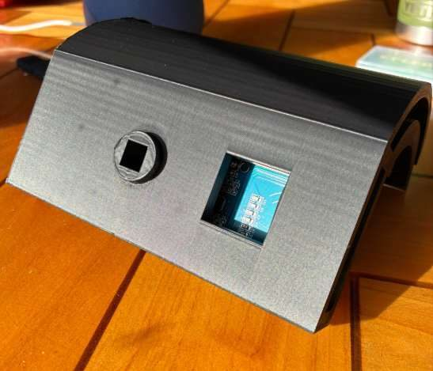
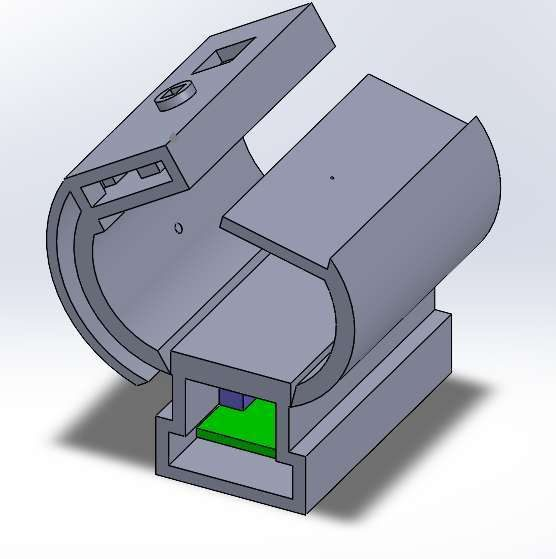

Automatic RFID Bike Lock
Fumbling with a key or combination every time you park a bike is friction that doesn't need to exist. This project is an automatic lock: tap an RFID fob and a solenoid-driven mechanism retracts the lock, with LED and audio feedback confirming the state.
How It Works
An Arduino Nano reads the RFID scanner and drives the locking mechanism, with LEDs and audio feedback confirming each state change: present a valid fob and the shackle retracts, present it again and it locks. Every part is designed in SolidWorks and 3D-printed, and the design has moved through several revisions as the mechanism and electronics packaging matured. Here is that progression.
First Prototype
The initial build proved out the core loop — scan, authenticate, actuate, and confirm with LED and audio feedback. It uses a simple wedge-shaped 3D-printed enclosure with the RFID scanner and status display set into the front face.


Revision v.06
The first major redesign packaged the mechanism into a compact cylindrical housing: the retraction drive and spool, the RFID and control electronics, and the solenoid locking hardware, all behind bolt-on cover plates so the internals stay serviceable.


Revision v.08 — Latest
The current revision integrates the control and RFID boards into a stacked electronics bay above the lock barrel, adds a bolt-down mounting foot for fixing the lock to a frame or rack, and refines the cylindrical locking body and drive shaft. It is shown exploded to reveal the PCB stack, the motor and spool, the drive shaft, and the top cover plate.

Status
The lock authenticates, actuates, and reports state reliably. Current work is on the retraction drive and weatherproofing the housing for daily outdoor use.
Top Skills Utilized
- Arduino
- RFID
- Solenoids
- Circuit Design
- 3D Printing
- SolidWorks